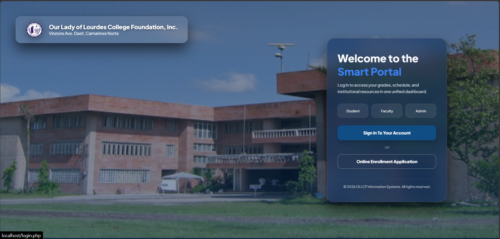

A curated collection of projects — from web design and development to graphic design and academic tasks.
Portfolio
Personal portfolio with dark/light theme toggle, custom cursor, particle effects, and animated sections.
Full-stack disaster response and family accountability system with real-time mapping and offline-first architecture.
Branded social media templates, infographics, and marketing visuals created in Canva and Photoshop.
Multi-page school website built with HTML/CSS/JS connected to Supabase and deployed on Vercel.
Full-featured tabulation with Admin, Judge, and Results portals, gender separation, and weighted scoring.
Formatted academic nursing documents including care plans, performance checklists, and teaching plans.

Multi-role school management system with super_admin, dean, teacher, and student dashboards.
Collection of photo retouching, background removal, color grading, and creative compositing work.
No projects found in this category.
Let's collaborate and build something great together.